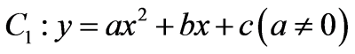
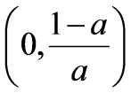
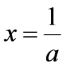

2026年北京市中考数学试卷 · 数学解答题 第26题26. 在平面直角坐标系中，抛物线经过点，对称轴为．（1）求b的值，并用含a的式子表示c；（2）已知M是抛物线上的点，M的横坐标为t，抛物线的顶点为M，且可以由抛物线平移得到（特别地，当M是的顶点时，即为）．若无论t为何值，抛物线都不经过点O，求a的取值范围．
 中，抛物线
中，抛物线 上的点，M的横坐标为t，抛物线
上的点，M的横坐标为t，抛物线 的顶点为M，且可以由抛物线平移得到（特别地，当M是的顶点时，即为）．若无论t为何值，抛物线都不经过点O，求a的取值范围．
的顶点为M，且可以由抛物线平移得到（特别地，当M是的顶点时，即为）．若无论t为何值，抛物线都不经过点O，求a的取值范围．